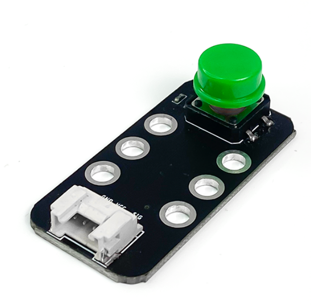

4. Nút nhấn đơn
{kind=link}
Nút nhấn đơn là một loại vật dụng được sử dụng thường xuyên trong gia đình, ví dụ như: chuông cửa, nút nhấn khởi động xe, bàn phím,… Module 1 nút nhấn đơn 12×12 là sản phẩm thiết kế nhỏ gọn, dễ kết nối sử dụng, phù hợp cho các ứng dụng điều khiển bằng phím nhấn.
1. Mua sản phẩm

2. Thông số kỹ thuật
Thông số kỹ thuật của nút nhấn
Điện áp: 3.3V
Đầu ra: Digital (pull-up ở trạng thái chưa nhấn)
Giao tiếp: 3 chân (S V G)
Kích thước nút nhấn: 12mm x 12mm
Kích thước module: 48mm x 24 mm x 18 mm (DxRxC)
Pinout của nút nhấn đơn
Module nút nhấn đơn có 3 chân, và mỗi chân có chức năng như sau:
STT |
Chân |
Chức năng |
|---|---|---|
1 |
GND |
Nối đất |
2 |
VCC |
Cấp nguồn (3.3V) |
3 |
NC |
Không sử dụng |
4 |
SIG |
Tín hiệu nút nhấn |
3. Kết nối
Bước 1: Chuẩn bị các thiết bị như sau:

|

|
|
|---|---|---|
Máy tính lập trình Yolo:Bit |
Mạch mở rộng cho Yolo:Bit |
Nút nhấn đơn (kèm dây Grove) |
Bước 2: Cắm Yolo:Bit vào mạch mở rộng
Bước 3: Sử dụng dây Grove cắm vào nút nhấn
Bước 4: Kết nối thiết bị vào chân P2 trên mạch mở rộng

Bạn có thể kết nối nút đơn vào bất kỳ chân tín hiệu nào trên mạch mở rộng
4. Hướng dẫn lập trình với OhStem App
Sử dụng các khối lệnh trong danh mục CHÂN CẮM, để làm việc với nút nhấn đơn.
Gửi chương trình sau lên Yolo:Bit:
{kind=link}
Note
Giải thích chương trình: Khi nút nhấn được nhấn, trạng của chân P2 sẽ là tắt. và khi đó, sẽ hiện trái tim lên màn hình LED và phát âm báo hiệu. Nếu nút không được nhấn, sẽ hiện dấu “X” lên màn hình LED của Yolo:Bit
5. Hướng dẫn lập trình Arduino
Mở phần mềm Arduino IDE. Xem hướng dẫn lập trình với Arduino tại đây.
Copy đoạn code sau, click vào nút
Verifyđể kiểm tra lỗi chương trình. Sau khi biên dịch không báo lỗi, bạn có thể nạp đoạn code vào board.
#include "YoloBit.h"
// Biến lưu trạng thái của pushbutton
int buttonPin = P2; // Đầu vào của pushbutton
int ledPin = P1; // Đầu ra của đèn LED
int buttonState = 0; // Biến lưu trạng thái của pushbutton
void setup()
{
// Đặt chế độ đầu ra cho đèn LED
pinMode(ledPin, OUTPUT);
// Đặt chế độ đầu vào cho pushbutton
pinMode(buttonPin, INPUT);
}
void loop()
{
// Đọc trạng thái pushbutton
buttonState = digitalRead(buttonPin);
// Nếu pushbutton được bấm thì bật đèn LED
if (buttonState == HIGH) {
digitalWrite(ledPin, HIGH);
}
// Ngược lại, tắt đèn LED
else {
digitalWrite(ledPin, LOW);
}
}
Note
Giải thích chương trình: Sau khi chạy chương trình, khi nút được nhấn, bật đèn led P1.